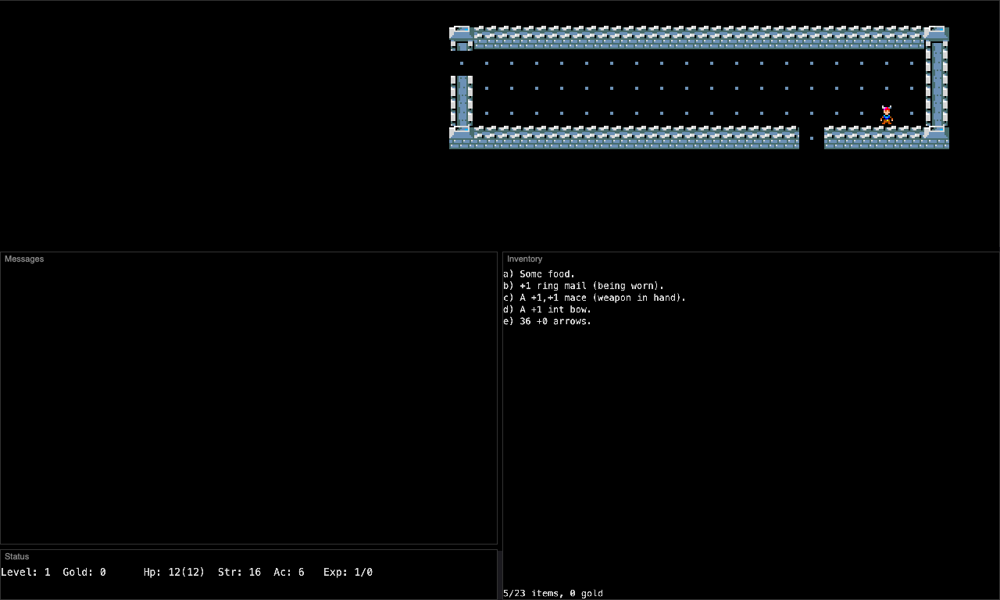
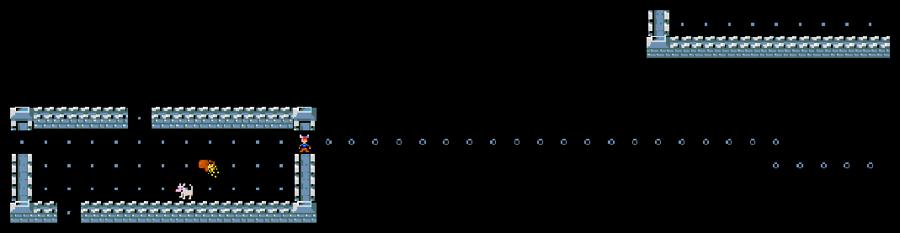
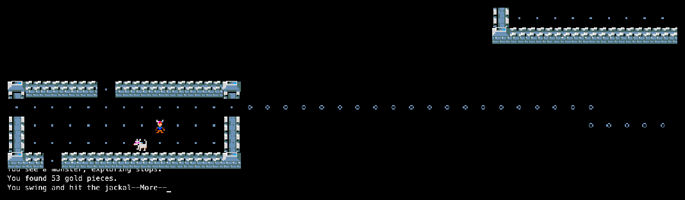
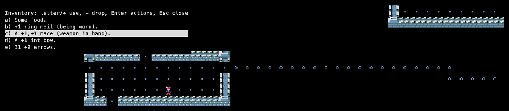

Rogue has no parent game. Michael Toy and Glenn Wichman wrote it at UC Santa Cruz around 1980, after Colossal Cave Adventure, the mainframe Star Trek game and Dungeons & Dragons, on top of Ken Arnold's curses screen library.
3.6 is the version that first spread widely (1981). It is the common root of the family: Super-Rogue and Advanced Rogue were built from its code, while the 5.x line (Rogue 5.4, Rogue PC) continued at Berkeley. See the family tree.
Credits
Michael C. Toy
Co-creator, main programmer
Glenn R. Wichman
Co-creator, game design, named the game
Kenneth C. R. C. Arnold
Author of curses, later co-developer
Roguelike Restoration Project
Preserved this source (rogue3.6 @ f36912c)
Screenshots

Rogue 3.6 has no title screen: it drops you straight into a room. This is the whole screen at the start.

First steps: a lit room, and a corridor of # (drawn as rings) leading away.

A fight: “You swing and hit the jackal.”

Inventory: food, ring mail, a mace, a bow and arrows.
Trivia
Dennis Ritchie joked that Rogue was the biggest waste of CPU cycles in history. (Wikipedia)
“The name ‘Rogue’ was my idea,” writes Glenn Wichman in his history of the game. (wichman.org)
Rogue went out with BSD Unix and spread over ARPANET to universities everywhere. (Wikipedia)
The source of 3.6 checks the machine's load: too_much() can refuse to start the game when the shared computer is busy, unless you are the wizard or the author: “Sorry, … but the system is too loaded now. Try again later. Meanwhile, why not enjoy a slime-mold?” (source: main.c)
3.6 still uses Dungeons & Dragons monsters — floating eye, rust monster, umber hulk, xorn, quasit — that the later 5.x versions replaced with new ones like the aquator and xeroc. (source: init.c, compared with Rogue 5.4)
What's unique
The template for a genre: random levels, permanent death, items identified by use, a letter for every monster.
The D&D bestiary: unlike later versions, the monsters are straight from the Monster Manual.
Small and pure: one fighter, one goal (the Amulet of Yendor on level 26), no shops, no classes, no spells.
Code dive
Language: K&R C, about 14,000 lines. Monster and item tables are plain arrays in init.c.
Environment: BSD Unix on DEC VAX computers, played on video terminals through curses.
Wizard mode is started with an empty first argument and a password compared against a crypt() hash.
This port: the same C through a curses shim, to X11 and to WebAssembly. Source: memmaker/rogue3.6.